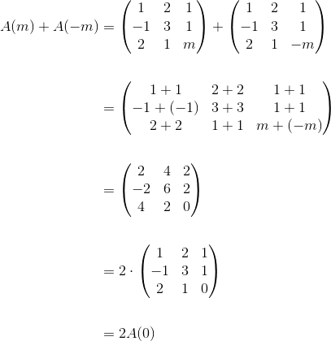

Exerciții și probleme rezolvate pentru profilul pedagogic
1. Această problemă a fost dată în sesiunea iunie-iulie a anului 2014, pentru profilul pedagogic, la subiectul III.
Bacalaureat Matematică 2014 | Pedagogic | Sesiunea iunie-iulie | Subiectul III
Se consideră matricea  , unde
, unde  este număr real.
este număr real.
- Calculați
 .
. - Determinați numărul real știind că
 .
. - Arătați că
 .
. - Arătați că
 pentru orice numere reale și
pentru orice numere reale și  .
. - Verificați dacă matricea
 este inversa matricei
este inversa matricei  pentru orice număr real .
pentru orice număr real . - Determinați matricea
 știind că
știind că  pentru orice număr real .
pentru orice număr real .
Rezolvare:
1.

2.
![\begin{align*} &2\cdot A(a) +A( a-3) =3\cdot A(0)\Leftrightarrow \\\\ &\Leftrightarrow 2\cdot \left( \begin{array}{cc} 1 & a\\ 0 & 1 \end{array} \right)+ \left( \begin{array}{cc} 1 & a-3\\ 0 & 1 \end{array} \right)= 3\cdot \left( \begin{array}{cc} 1 & 0 \\ 0 & 1 \end{array} \right) \\\\ &\Leftrightarrow \left( \begin{array}{cc} 2 & 2a\\ 0 & 2 \end{array} \right)+ \left( \begin{array}{cc} 1 & a-3\\ 0 & 1 \end{array} \right)= \left( \begin{array}{cc} 3 & 0 \\ 0 & 3 \end{array} \right) \\\\ &\Leftrightarrow \left( \begin{array}{cc} 2+1 & 2a + a-3\\ 0+0 & 2+1 \end{array} \right)= \left( \begin{array}{cc} 3 & 0 \\ 0 & 3 \end{array} \right) \\\\ &\Leftrightarrow \left( \begin{array}{cc} 3 & 3a-3 \\ 0 & 3 \end{array} \right) = \left( \begin{array}{cc} 3 & 0 \\ 0 & 3 \end{array} \right) \end{align*}](../../media/webbooks/283/1823/images/equations/ym0_op00_zrgx-ztxf7u0w==.gif)

3.
![\begin{align*} &A(1) +A(2) + \cdots A(9) = 9\cdot A(5) \Leftrightarrow \\\\ &\Leftrightarrow \left( \begin{array}{cc} 1 & 1\\ 0 & 1 \end{array} \right) + \left( \begin{array}{cc} 1 & 2\\ 0 & 1 \end{array} \right)+ \cdots + \left( \begin{array}{cc} 1 & 9\\ 0 & 1 \end{array} \right) = 9\cdot \left( \begin{array}{cc} 1 & 5\\ 0 & 1 \end{array} \right) \\\\ &\Leftrightarrow \left( \begin{array}{cc} 1+1+\cdots + 1 & 1+2+\cdots + 9\\ 0+ 0+\cdots + 0 & 1+1+\cdots 1 \end{array} \right)= \left( \begin{array}{cc} 9 & 45\\ 0 & 9 \end{array} \right) \\\\ &\Leftrightarrow \left( \begin{array}{cc} 9 & \displaystyle\frac{(1+9)\cdot 9}{2}\\\\ 0 & 9 \end{array} \right)= \left( \begin{array}{cc} 9 & 45\\ 0 & 9 \end{array} \right) \\\\ &\Leftrightarrow \left( \begin{array}{cc} 9 & 45\\ 0 & 9 \end{array} \right) = \left( \begin{array}{cc} 9 & 45\\ 0 & 9 \end{array} \right) \end{align*}](../../media/webbooks/283/1823/images/equations/49hnprp2lzotwjoedrfq2q==.gif)

4.
![\begin{align*} &\det(A(a)+A(b))=4\cdot \det(A(a)\cdot A(b)) \Leftrightarrow \\\\ &\Leftrightarrow \det \left( \left( \begin{array}{cc} 1 & a\\ 0 & 1 \end{array} \right)+ \left( \begin{array}{cc} 1 & b\\ 0 & 1 \end{array} \right)\right) = 4\cdot \det \left( \left( \begin{array}{cc} 1 & a \\ 0 & 1 \end{array} \right) \cdot \left( \begin{array}{cc} 1 & b\\ 0 & 1 \end{array} \right)\right) \\\\ &\Leftrightarrow \det\left( \begin{array}{cc} 1+1 & a+b\\ 0 & 1+1 \end{array} \right) = 4\cdot \det\left( \begin{array}{cc} 1\cdot 1 + a\cdot 0 & 1\cdot b+a\cdot 1\\ 0\cdot 1 + 1\cdot 0 & 0\cdot b + 1 \cdot 1 \end{array} \right) \\\\ &\Leftrightarrow \det\left( \begin{array}{cc} 2 & a+b\\ 0 & 2 \end{array} \right) = 4\cdot \det\left( \begin{array}{cc} 1 & a+b\\ 0 & 1 \end{array} \right) \\\\& \Leftrightarrow 2\cdot 2- (a+b)\cdot 0 = 4( 1\cdot 1 - 0\cdot (a+b)) \\\\ &\Leftrightarrow 4- 0= 4(1-0) \\\\ &\Leftrightarrow 4= 4 \end{align*}](../../media/webbooks/283/1823/images/equations/h04qc74afgpafbp3jplu7q==.gif)

5.
Metoda I
 -inversabilă.
-inversabilă.

 , unde
, unde


Metoda II

6.
![\begin{align*} &X\cdot A(a)= A(a)\cdot X \Leftrightarrow \\\\ &\Leftrightarrow \left( \begin{array}{cc} p & 2\\ q & 1 \end{array} \right) \cdot \left( \begin{array}{cc} 1 & a\\ 0 & 1 \end{array} \right)= \left( \begin{array}{cc} 1 & a\\ 0 & 1 \end{array} \right) \cdot \left( \begin{array}{cc} p & 2\\ q & 1 \end{array} \right) \\\\& \Leftrightarrow \left( \begin{array}{cc} p\cdot 1 + 2 \cdot 0 & p\cdot a + 2 \cdot 1\\ q\cdot 1 + 1\cdot 0 & q\cdot a +1\cdot 1 \end{array} \right) = \left( \begin{array}{cc} 1\cdot p+ a\cdot q & 1\cdot 2+ a\cdot1\\ 0\cdot p + 1\cdot q & 0\cdot 2 + 1\cdot 1 \end{array} \right)\\\\ & \Leftrightarrow \left( \begin{array}{cc} p & pa+2\\ q & qa+1 \end{array} \right)= \left( \begin{array}{cc} p+aq & 2+a\\ q & 1 \end{array} \right) \end{align*}](../../media/webbooks/283/1823/images/equations/-5qw90pwevlcm8gunuubiq==.gif)


2. Această problemă a fost dată în anul 2014, pentru profilul pedagogic, la subiectul III, al modelului de subiect dat în acel an.
Bacalaureat Matematică 2014 | Pedagogic | Model de subiect | Subiectul III
Pentru fiecare număr real  se consideră matricea
se consideră matricea 
- Calculați
- Calculați
- Determinați numărul real pentru care
- Arătați că
- Verificați dacă matricea este inverva matricei
- Determinați numărul real pentru care sistemul are soluția
Rezolvare:
1.
Calculăm 

Calculăm 

2.
Calculăm 

Calculăm 
![\begin{align*} &A(0)\cdot A(1)=\begin{pmatrix}0&0&1\\1&0&1\\ 0&1&0 \end{pmatrix}\cdot\begin{pmatrix}1&1&1\\1&0&1\\ 1&1&0 \end{pmatrix}\\\\ &=\begin{pmatrix} 0\cdot1+0\cdot1+1\cdot1 & 0\cdot1+0\cdot0+1\cdot1 & 0\cdot1+0\cdot1+1\cdot0 \\ 1\cdot1+0\cdot1+1\cdot1 & 1\cdot1+0\cdot0+1\cdot1 & 1\cdot1+0\cdot1+1\cdot0 \\ 0\cdot1+1\cdot1+0\cdot1 & 0\cdot1+1\cdot0+0\cdot1 & 0\cdot1+1\cdot1+0\cdot0\end{pmatrix}\\\\ &=\begin{pmatrix} 0+0+1 & 0+0+1 & 0+0+0\\ 1+0+1 & 1+0+1 & 1+0+0 \\ 0+1+0 & 0+0+0 & 0+1+0\end{pmatrix}\\\\ &=\begin{pmatrix} 1&1&0\\2&2&1\\1&0&1\end{pmatrix} \end{align*}](../../media/webbooks/283/1823/images/equations/h9xpdqzsut06aq9fod85tw==.gif)

3.
Calculăm 
Aflăm numărul real  pentru care
pentru care 

Rezultă că numărul real pentru care  este
este 
4.

5.
Calculăm  respectiv
respectiv 
![\begin{align*} &A(0)\cdot B=\\\\ &=\begin{pmatrix} 0&0&1\\1&0&1\\0&1&0\end{pmatrix}\cdot\begin{pmatrix} -1&1&0\\0&0&1\\1&0&0\end{pmatrix}\\\\ &=\begin{pmatrix} 0\cdot(-1)+0\cdot0+1\cdot1 & 0\cdot1+0\cdot0+1\cdot0& 0\cdot0+0\cdot1+1\cdot0 \\ 1\cdot(-1)+0\cdot0+1\cdot1 & 1\cdot1+0\cdot0+1\cdot0 & 1\cdot0+0\cdot1+1\cdot0 \\ 0\cdot(-1)+1\cdot0+0\cdot1 & 0\cdot1+1\cdot0+0\cdot0 & 0\cdot0+1\cdot1+0\cdot0\end{pmatrix}\\\\ &=\begin{pmatrix}0+0+1 & 0+0+0 & 0+0+0 \\ -1+0+1& 1+0+0 & 0+0+0\\ 0+0+0&0+0+0&0+1+0 \end{pmatrix}\\\\ &=\begin{pmatrix}1&0&0\\0&1&0\\0&0&1 \end{pmatrix}\\ \\&=I_3\end{align*}](../../media/webbooks/283/1823/images/equations/4ftigvkrt4ssmm4vbmz_bq==.gif)
![\begin{align*} & B\cdot A(0)=\\\\ &=\begin{pmatrix} -1&1&0\\0&0&1\\1&0&0\end{pmatrix}\cdot\begin{pmatrix} 0&0&1\\1&0&1\\0&1&0\end{pmatrix}\\\\ &=\begin{pmatrix} -1\cdot0+1\cdot1+0\cdot0 & -1\cdot0+1\cdot0+0\cdot1& -1\cdot1+1\cdot1+0\cdot0 \\ 0\cdot0+0\cdot1+1\cdot0 & 0\cdot0+0\cdot0+1\cdot1 & 0\cdot1+0\cdot1+1\cdot0 \\ 1\cdot0+0\cdot1+0\cdot0 & 1\cdot0+0\cdot0+0\cdot1 & 1\cdot1+0\cdot1+0\cdot0\end{pmatrix}\\ \\&=\begin{pmatrix}0+1+0 & 0+0+0 & -1+1+0 \\ 0+0+0& 0+0+1 & 0+0+0\\ 0+0+0&0+0+0&1+0+0 \end{pmatrix}\\\\ &=\begin{pmatrix}1&0&0\\0&1&0\\0&0&1 \end{pmatrix}\\\\ &=I_3 \end{align*}](../../media/webbooks/283/1823/images/equations/logxyx_h1w_obn4fba8v4a==.gif)

Rezultă că matricea  este inversa matricei
este inversa matricei 
6. Fără rezolvarea acestui subpunct, deoarece este cu sistem de ecuații, iar noi suntem la capitolul matrice.
3. Această problemă a fost dată în sesiunea august-septembrie a anului 2013, pentru profilul pedagogic, la subiectul III.
Bacalaureat Matematică 2013 | Pedagogic | Sesiunea august-septembrie | Subiectul III
Pentru fiecare număr real  se consideră matricea
se consideră matricea 
- Calculați

- Arătați că
 pentru orice număr real .
pentru orice număr real . - Determinați numerele reale pentru care

- Arătați că
 pentru orice număr real .
pentru orice număr real . - Verificați dacă
 unde
unde 
- Pentru
 , rezolvați sistemul
, rezolvați sistemul 
Rezolvare:
1.


2.
 .
.
3.

Metoda I
Numerele reale pentru care  sunt
sunt  și
și  .
.
Metoda II

Numerele reale pentru care sunt și .
4.

 , .
, .
5.
Calculăm 
![\begin{align*} & A(0)\cdot \begin{pmatrix} -1&1&-1\\2&-2&-2\\-7&3&5 \end{pmatrix} \\\\ &=\begin{pmatrix} 1&2&1\\-1&3&1\\2&1&0 \end{pmatrix}\cdot \begin{pmatrix} -1&1&-1\\2&-2&-2\\-7&3&5 \end{pmatrix} \\ \\&=\begin{pmatrix} 1\cdot(-1)+2\cdot2+1\cdot(-7)&1\cdot1+2\cdot(-2)+1\cdot3&1\cdot(-1)+2\cdot(-2)+1\cdot5\\-1\cdot(-1)+3\cdot2+1\cdot(-7)&-1\cdot1+3\cdot(-2)+1\cdot3&-1\cdot(-1)+3\cdot(-2)+1\cdot5\\2\cdot(-1)+1\cdot2+0\cdot(-7)&2\cdot1+1\cdot(-2)+0\cdot3&2\cdot(-1)+1\cdot(-2)+0\cdot5 \end{pmatrix}\\\\ &=\begin{pmatrix} -1+4-7&1-4+3&-1-4+5\\1+6-7&-1-6+3&1-6+5\\-2+2+0&2-2+0&-2-2+0 \end{pmatrix}\\\\ &=\begin{pmatrix} -4&0&0\\0&-4&0\\0&0&-4 \end{pmatrix}\\\\ &=-4\cdot\begin{pmatrix} 1&0&0\\0&1&0\\0&0&1 \end{pmatrix}\\\\ &=-4I_3 \end{align*}](../../media/webbooks/283/1823/images/equations/fq7su3ao_3lhpevs0kmyaw==.gif)

6. Acest subpunct va putea fi rezolvat la capitolul sisteme de ecuații.
4. Această problemă a fost dată în sesiunea iunie-iulie a anului 2013, pentru profilul pedagogic, la subiectul III.
Bacalaureat Matematică 2013 | Pedagogic | Sesiunea iunie-iulie | Subiectul III
Pentru fiecare număr real se consideră matricea  .
.
- Arătați că
 .
. - Calculați
 .
. - Arătați că
 , pentru orice număr real
, pentru orice număr real  .
. - Verificați dacă matricea
 este inversa matricei
este inversa matricei  .
. - Determinați numărul real pentru care suma elementelor matricei
 este egală cu
este egală cu  .
. - Pentru
 , rezolvați sistemul
, rezolvați sistemul  .
.
Rezolvare:
1.

2.
![\begin{align*} A(1)\cdot A(0)&=\begin{pmatrix} 1 & 1 &1 \\ 1& 1& 1\\ 1&1 &1 \end{pmatrix}\cdot \begin{pmatrix} 0 & 1 &1 \\ 1& 0& 1\\ 1&1 &1 \end{pmatrix}\\ \\&=\begin{pmatrix} 1\cdot 0+1\cdot1+1\cdot1 & 1\cdot 1+1\cdot0+1\cdot1&1\cdot 1+1\cdot1+1\cdot1 \\ 1\cdot 0+1\cdot1+1\cdot1 & 1\cdot 1+1\cdot0+1\cdot1 &1\cdot 1+1\cdot1+1\cdot1 \\ 1\cdot 0+1\cdot1+1\cdot1& 1\cdot 1+1\cdot0+1\cdot1 & 1\cdot 1+1\cdot1+1\cdot1 \end{pmatrix}\\\\ &=\begin{pmatrix} 0+1+1 & 1+0+1 &1+1+1 \\ 0+1+1 & 1+0+1 & 1+1+1\\ 0+1+1 & 1+0+1 & 1+1+1 \end{pmatrix}\\\\ &=\begin{pmatrix} 2 &2 &3 \\ 2 &2 &3 \\ 2&2 &3 \end{pmatrix} \end{align*}](../../media/webbooks/283/1823/images/equations/2uvht6nlug1jv2tqydu01q==.gif)

3.
4.
![\begin{align*} A(0)\cdot B&=\begin{pmatrix} 0 & 1 &1 \\ 1& 0& 1\\ 1&1 &1 \end{pmatrix}\cdot \begin{pmatrix} -1 & 0 &1 \\ 0& -1 &1 \\ 1& 1& -1 \end{pmatrix}\\\\ &=\begin{pmatrix} 0\cdot (-1)+1\cdot 0+1\cdot 1 &0\cdot 0+1\cdot (-1)+1\cdot 1 &0\cdot 1+1\cdot 1+1\cdot (-1) \\ 1\cdot (-1)+0\cdot 0+1\cdot 1 &1\cdot 0+0\cdot (-1)+1\cdot 1 &1\cdot 1+1\cdot 1+1\cdot (-1) \\ 1\cdot (-1)+1\cdot 0+1\cdot 1&1\cdot 0+1\cdot (-1)+1\cdot 1 &1\cdot 1+1\cdot 1+1\cdot (-1) \end{pmatrix}\\\\ &=\begin{pmatrix} 0+0+1 & 0-1+1 & 0+1-1\\ -1+0+1 & 0+0+1 &1+0-1 \\ -1+0+1 &1+0-1 &1+1-1 \end{pmatrix}\\\\ &=\begin{pmatrix} 1 &0 &0 \\ 0 & 1 & 0\\ 0 & 0 &1 \end{pmatrix}\\\\ &=I_3 \end{align*}](../../media/webbooks/283/1823/images/equations/v4yth-jiibjor07x5_vqdq==.gif)
![\begin{align*} B\cdot A(0)&= \begin{pmatrix} -1 & 0 &1 \\ 0& -1 &1 \\ 1& 1& -1 \end{pmatrix}\cdot\begin{pmatrix} 0 & 1 &1 \\ 1& 0& 1\\ 1&1 &1 \end{pmatrix}\\\\ &=\begin{pmatrix} (-1)\cdot 0+0\cdot 1+1\cdot 1 &(-1)\cdot 1+0\cdot 0+1\cdot 1 &(-1)\cdot 1+0\cdot 1+1\cdot 1 \\ 0\cdot 0+(-1)\cdot 1+1\cdot 1 &0\cdot 1+(-1)\cdot 0+1\cdot 1 &0\cdot 1+(-1)\cdot 1+1\cdot 1 \\ 1\cdot 0+1\cdot 1+(-1)\cdot 1&1\cdot 1+1\cdot 0+(-1)\cdot 1 &1\cdot 1+1\cdot 1+(-1)\cdot 1 \end{pmatrix}\\\\ &=\begin{pmatrix} 0+0+1 & -1+0+1 & -1+0+1\\ 0-1+1 & 0+0+1 &0-1+1 \\ 0+1-1&1+0-1 &1+1-1 \end{pmatrix}\\\\ &=\begin{pmatrix} 1 &0 &0 \\ 0 & 1 & 0\\ 0 & 0 &1 \end{pmatrix}\\\\ &=I_3 \end{align*}](../../media/webbooks/283/1823/images/equations/v8jcmnawhikvedzeevhcda==.gif)

Rezultă că matricea  este inversa matricei .
este inversa matricei .
5.
Suma elementelor matricei este:

6. Acest subpunct se poate rezolva după ce citești ghidul intitulat "Sisteme de ecuații".
Pentru a vedea mai multe exerciții cu matrice rezolvate pentru profilul pedagogic, accesează Subiectul III (fără subpunctele care presupun utilizarea noțiunilor de sisteme de ecuații) de la eBook-urile următoare:
- Bacalaureat Matematică 2014 | Pedagogic | Sesiunea august-septembrie
- Bacalaureat Matematică 2013 | Pedagogic | Model de subiect
- Bacalaureat Matematică 2012 | Pedagogic | Sesiunea august-septembrie
- Bacalaureat Matematică 2012 | Pedagogic | Sesiunea iunie-iulie
- Bacalaureat Matematică 2012 | Pedagogic | Model de subiect